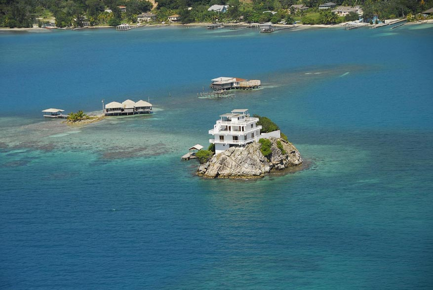

| Home / Dive Resorts / Live-Aboards / Snorkeling / Who We Are / Book a Trip |
© Copyright Dunbar Villa & U.S. Dive Travel Network.
All rights are reserved.
NAUTILUS DIVE RESORT + DUNBAR VILLA in HONDURAS:
REISETIPS fuer FERIEN zur
"SCHOENER PIRATEN-INSEL" GUANAJA --

Die folgende Aufstellung ist eine Zusammenfassung
der wichtigsten Punkte, die man bei einer Reise nach Guanaja /
Honduras beruecksichtigen sollte. Die Liste ist nach unseren
persoenlichen Kriterien aufgestellt worden und sollte bezueglich
Impfungen, aerztlichen Atesten etc. mit den Anforderungen des
Herkunftslandes verglichen werden. Ausserdem sollten einschlaegige
Reisefuehrer konsultiert werden ("Zentralamerika") ,
um eine breite Informationspalette zu haben. (Ja sicher, das ist richtig, TauchFreunden !)
Welche Gruende sprechen fuer Guanaja als
Reiseziel Ihres Urlaubs --
Wenn man von Belize aus die Riffe entlangsegelt,
trifft man immer wieder
Inseln, die einen bezaubern.....Das glasklare
Wasser mit seinen vielfaeltigen Farben zwischen Jade bis tiefblau,
die weissbraunen Sandstraende mit den Kokospalmen, der stete
Wind, der einem in der Sonne Kuehlung bringt....that's life in
the Caribbean Sea...
Guanaja, die entlegenste Insel der Bay Islands
(in Spanisch : Islas de Bahia) muss schon einen speziellen Zauber
auf seine sporadischen Besucher ausueben, wenn man beruecksichtigt
, dass Segler ankamen, um einen Tag zu ankern und erst nach 3
Monaten weitersegelten.....(ein anderer verkaufte sogar seine
Jacht und erwarb eine kleine Insel dafuer....).
Bitte hier klicken um Hauptseite von Villa at Dunbar Rock zu besuchen!
Das Besondere von Guanaja ist wohl die Natuerlichkeit von
dieser Insel! Die
Nordkueste der Insel praesentiert sich nach
7 Jahren immer noch in ihrer
unverfaelschten Seite: Unbebaute Sandstraende
wohin man schaut......Und das ist charakteristisch fuer die ganze
Insel, auf der es bis jetzt keine grossen Bauvorhaben gibt. Ein
anderer Kernpunkt der Insel ist das Fehlen von Strassen ! Gibt's nichts ! Jegliche
Fortbewegung ist per Boot oder zu Fuss und die "Hauptstadt"
von Guanaja steht zum groessten Teil im Wasser (wie Venedig).
Villa at Dunbar Rock / Kein Teneriffa:
Somit sollte jedem Besucher klar sein, dass
er kein laermendes Jamaica oder Cayman Island vorfindet, sondern
eine Oase der Ruhe, die zwar in einer der zwei Diskoteken und
einigen originellen Kneipen eine Unterbrechung finden kann, ansonsten
aber die Grundstimmung der Insel beschreibt......Ausspannen ist
die erste Grundregel......
Villa at Dunbar Rock / Natur:
Der Naturliebhaber findet in Guanaja eine
Vielzahl von Anreizen angefangen von den Kolibris und kleinen
Papageien bis hin zu tropischem Urwald (im kleinen Rahmen mit)
Orchideen.
Villa at Dunbar Rock / Tauchen:
Fuer Taucher biete Guanaja nachweisslich
das Beste, was die Bay Islands zu bieten haben. Es gibt Plaetze
mit handzahmen "Groupern" und Muraenen (die wir zahmgefuettert
haben), es gibt Drop-offs von 1000 Fuss (300 m) und mehr Tiefe,
es gibt "Canyons" mit einer Vielzahl von zerkluefteten
Vorspruengen, die alle von Korallen und Schwaemmen bewachsen sind.
Die Nordseite hat so einzigartige Korallenformationen, dass die
Tauchplaetze Namen wie "Paradies" haben. In Guanaja
findet man 95 % aller in der Karibik vorkommenden Korallenarten.
Eine halbe Stunde von dieser Gegend findet
man in 60 Fuss Tiefe die
verwunschene Unter-wasserlandschaft von
"Black Rock" , eine von Lawa gegossene Formation von
20 meter hohen Saeulen und Kawernen , die einzigartig in der Karibik
sind..........Die Wassertemperatur liegt das ganze Jahr zwischen
27 - 30 Grad C, die Sichtweite liegt im Schnitt bei 20 - 30 m
und manchmal mehr.
Wichtige Auswahlkriterien:
Wie ueberall in der Karibik kann es auf
den honduranischen Inseln Roatan und Guanaja zu Mueckenbelaestigungen
kommen und beim Ausschwaermen der Feuerkorallen kann die Caribe
auftreten, die zu Hautreizungen fuehren koennen. Zu dieser Zeit
ist das Tauchen mit Komplettanzug empfehlenswert. Die Hotelanlagen
auf Roatan / Guanaja sind auf Grund ihrer einfachen Konzeption
fuer Gaeste ungeeignet, die auf Luxus nicht verzichten wollen.
Tauchen steht im Vordergrund und hier koennen Sie wirlich Perfektion
erwarten!
Generelle Beschreibung der Hotelanlage
von Villa at Dunbar Rock:
Hotel: Das Haupthaus (Hotel), ein solider Bau im
Kolonialstil, gebaut aus Betonblocksteinen und Edelhoelzern fuer
Dach und Tueren, ist rund 130 m entfernt vom Strand. Die ehemalige
Villa besteht aus 6 Gaestezimmern (jedes mit Bad/WC; warm Wasser
und drei Raeumen mit Klimaanlage oder Ventillatoren; Rest mit
Ventillatoren), einem grosszuegigem
Aufenthaltraum mit Esszimmer, Leseecke und
einem an den Aufenthaltsraum angrenzenden grossen Balkon mit Seeblick.
Nautilus Resort / Dive-shop:
Der Dive-shop befindet sich direkt am Strand
und beherrbergt den
Kompressorraum, Trockenraum, Speicher fuer
Tauchausruestungen und das Spuelbecken fuer die Taucherausruestungen.
Im Obergeschoss befinden sich die Aufenthaltsraeume fuer das
Personal. Vom Hotel aus blickt man auf eine weite Rasenflaeche
mit verstreut angeordneten Palmen.
Bitte hier klicken um Hauptseite von Villa at Dunbar Rock zu besuchen!
Guanaja / Vegetation:
Das Hotel ist von Mangobaeumen umgeben.
Hinter dem Hotel (100 m entfernt beginnt ein tropischer Wald,
der um einen kleinen Wasserfall gewachsen ist. In einer Hoehe
von 100 m beginnt ein Kiedernwald, der sich bis zur Spitze der
450 m hohen Berge fortsetzt.
Villa at Dunbar Rock / Strand:
Der Strand ist ein wilder Strand, schmal
und zum Teil mit Seegrass an der
Villa at Dunbar Rock / Wasserfront. Man kann nicht hier tauchen,
nur mit Tauchboot.
So weit in eigener Sache....Und nun zu weiteren
wichtigen Informationen :
Mehr Ueber GUANAJA,
BAY ISLANDS, HONDURAS:
1. Landessprache / Guanaja / Bay Islands:
Offizielle Sprache ist Spanisch, jedoch ist es auf den Bay Islands
leicht, mit Englisch durchzukommen, da auf Grund der englischen
Herkunft der Ureinwohner Englisch die zweite Hauptsprache ist.
Im spanischen werden die Inseln "Islas de Bahia" genannt.
2. Lage der Insel Guanaja: Guanaja ist
eine der 5 Hauptinseln der Bay Islands: Bei einer Flugverbindung
von San Pedro Sula aus , die jede Insel abdecken wuerde (z.Zt.
nicht der Fall), wuerde man zuerst Utila besuchen , dann Roatan
(die laengste Insel), Morat und Barbareta und als letzte Insel
Guanaja. Guanaja liegt rund 60 km vor Trujillo, einer Kleinstadt
des honduranischen Festlandes.
3. Kleidung: Durch das tropische Klima
der Insel kann das ganze Jaht ueber Sommerkleidung getragen werden.
Fuer die etwas kuehleren Abende sollte auch entsprechende waermere
Kleidung mitgebracht werden. Wanderer sollten entsprechende Schuhe
mitbringen.
4. Waehrung: Die honduranische Waehrung,
der "Lempira" (nach einem honduranischen, indianischen
Freiheitskaempfer benannt) wird auf dem Schwarzmarkt gehandelt
und bis heute (Datum: 30 Mai, 1997) ist das auch legal. Schwarzmarkt
mit U.S. Taler ist die beste Weg zu kaufen.
5. Netzspannung in Honduras: 120 V.
Unsere Videoausruestung ist gemaess NTSC Norm.
Bitte hier klicken um Hauptseite von Villa at Dunbar Rock zu besuchen!
Reise nach Honduras von den USA aus
:
Bitte hier klicken um Hauptseite von Villa at Dunbar Rock zu besuchen!
Flug nach Guanaja:
Auf dem "Standardflug" San Pedro
Sula -- Guanaja sieht die Flugroute wie folgt aus: Der Flug beginnt
in San Pedro , von wo aus man nach der kleinen Hafenstadt
"La Ceiba" fliegt. Auf dem Wege dorthin ist das Meer
(die Karibik) stets linker Hand. Man ueberfliegt zuerst riesige
Bananenplantagen, bis man an eine Bergkette kommt, die ueberflogen
wird. Danach ueberfliegt man Oelpalmenplantagen und vor La Ceiba
ist das Land so weit wie das Auge reicht mit Ananas bepflanzt.
Der Aufenthalt bei der Zwischenlandung in "La Ceiba"
dauert maximal eine halbe Stunde. Gleich nach der Ankunft geht
man mit dem Ticketslip (oder Rest der Bordkarte) zum Counter im
"Flughafen" und bekommt dafuer die Bordkarte fuer Guanaja.
Die Fluege werden meist ausgerufen, jedoch sollte man sich nicht
zu weit vom Wartesaal entfernen.
Der Weiterflug fuehrt an den "Cayos
Cochinos" vorbei (rechter Hand), einer
kleinen Inselgruppe mit dem Namen "Schweineinsel".
Rechter Hand, in der Ferne, kann man bei gutem Wetter die Halbinsel
von Trujillo sehen. Linker Hand liegen die Inseln Roatan und Barbareta
in der Ferne. Guanaja wird meist vom Suedwesten angeflogen (abhaengig
von Windrichtung ). Beim Anflug sieht man rechter Hand das "Southwest
Cay", wohl mit der schoenste Tauchplatz auf Guanaja. Beim
Anflug auf die Inseln ist manchmal mit kleinen Turbulenzen zu
rechnen, aber keine Sorge - die Piloten verstehen ihr Handwerk!
Gesundheit / Impfungen :
Die einschlaegigen Empfehlungen von Aerzten
fuer Mittelamerika versuchen zumeist, alle moeglichen auf dem
Festland vorkommenden Krankheiten abzudecken. Generell gilt folgendes
--
Impfungen / Folgende Impfungen sollten
abgedeckt sein:
Waehrend Ihrer Einreise durch Honduras sollten
keine offenen Getraenke, Eis oder Fruechte konsumiert werden.
Bier und Coca Cola / Sprite etc. sind die sichersten Begleiter.
Bitte hier klicken um Hauptseite von Villa at Dunbar Rock zu besuchen!
Tauglichkeitzeugnis fuer Taucher:
Fuer den Tauchbetrieb gilt das Folgende
:
a) Ein Tauglichlichkeitszeugnis fuer das
Tauchen wird vorausgesetzt .
b) Falls Alergien gegen Insektenstiche
bestehen, sollte der Tauchlehrer zu
Beginn davon informiert werden ( "Jellyfish"
= Quallen loesen alergische
Effekte aus ).
Insekten:
"No-see'ems" : In Guanaja gibt
es "Sandflies" (= Sandfliegen / keine
Sandfloehe !!) wie ueberall auf den Bay
Islands. Bestes Schutzmittel dagegen ist ein Badeoel von Avon
(Skin-so-soft). In den "Windmonaten" Januar - Mitte
September spuert man sie kaum. Das Sonnenbaden am Strand von
Nautilus kann dadurch manchmal (bei Windstille) etwas eingeschraenkt
werden und wir bringen die Gaeste zum Sonnen und schnorcheln auf eine kleine Felsinsel,
die 500 m vor dem Hotel liegt (man kann dort auch mit den im Hotel
verfuegbaren Kayaks (ab Maerz 1997 verfuegbar) selbst hinpaddeln!
Sonnenschutz:
Sonnenschutzmittel hoheren Faktors sollten
mitgebracht werden, da die Sonneeinstrahlung auf dem Boot viel hoeher
ist als auf dem Land und die Sonnebrandgefahr sehr gross ist!
Wasser auf Guanaja:
Guanaja ist die einzige Insel der Bay Islands,
die eigene ausreichende Wasservorkommen hat. Auf dem Grundstueck
des Hotels befindet sich ein kleiner Wasserfall (im Sommer kommt
davon im unteren Teil nichts mehr an), der ein Wasserreservoir
speist. Das Wasser wird periodisch ueberprueft und hat eine gute
Trinkwasserqualitaet. Da der europaeische Organismus jedoch auf
hohe Prozente Chlor geeicht ist, empfehlen wir, abgekochtes Wasser
oder Fruchtsaefte zu trinken. Zaehneputzen ist somit unkritisch.
Transport auf der Insel:
Der Transport auf der Insel ist nur per
Boot moeglich (es gibt keine Strassen). Da Bootstaxis teuer sind,
sollte man Besuche zu anderen Plaetzen immer mit den Fahrten des
Einkaufsboots abstimmen. Wegen der vielen Riffe vermieten wir
Boote nur mit ortskundigem Fuehrer!
Freizeitangebot:
Wandern: Die Insel ist von einem Netz an
Wegen ueberzogen, jedoch gibt es bis jetzt keine markierten Wege.
Falls man sportlich fit ist (die maximale Hoehe der "Berge"
ist zwar nur 400 m, aber die Steigungen sind enorm), kann man
stundenlang durch Kiefernwaelder wandern, die man ab 150 m Hoehe
anfindet. Es gibt mehrere Wasserfaelle und man hat einen wunderbaren
Blick auf die Riffe. Bei diesen Unternehmungen sollten feste
Schuhe getragen werden. Ausserdem sollte ein Kompass und Wasser
mitgenommen werden. Spaetestens um 17.00 sollte man wieder am
Ausgangspunkt von Nautilus ankommen (falls nichts anderes geplant wurde), da es um 18.00 schon dunkel ist.
Bitte hier klicken um Hauptseite von Villa at Dunbar Rock zu besuchen!
Guanaja / Hochseefischen:
39 ft (13 m) professionelles Fischerboot
verfuegbar. Preise auf Anfrage.
Guanaja / Segeln:
Sun-set trips und auch Tagestouren koennen
abhaengig von der Jahreszeit vermittelt werden. Man sollte eine Gruppe
organisieren , um die Angelegenheit preiswert zu gestalten .
Guanaja / Schnorcheln:
Lohnt sich auch fuer Taucher . Gute Plaetze
sind Southwest Cay und Michael Rock Beach ( die zulezt genannte
"Beach" sollte man gesehen haben!). Auch um Dunbar Rock
(500 m vor Villa at Dunbar Rock) lohnt sich das Schnorcheln.
Schnorchler koennen mit dem Tauchboot mitfahren und werden am
Strand an den schoensten Schnorchelplaetzen abgesetzt.
Bitte hier klicken um Hauptseite von Villa at Dunbar Rock zu besuchen!
Guanaja / Nachtleben:
Es gibt 2 Diskoteken in der Stadt Guanaja
, die allerdings manchmal einen sehr unqualifizierten Rapp spielen....
In der Naehe von Nautilus befinden sich einige Kneipen. Eine Kneipe
in der Naehe von Nautilus heist "Stressfrei", in der
sich immer interessante Leute treffen. Dann ist da noch der "Blue
Horizon", eine Kneipe mitten im Wasser....nur mit dem Boot
zu erreichen und Manati (alle in der Naehe von Nautilus).
Nautilus Tauchausruestung:
Die Tauchausruestung besteht aus folgenden
Elementen :
Villa at Dunbar Rock / Unterbringung:
Die Hotelraeume befinden sich alle im gleichen
Gebaeude, das sich 100 m vom Strand befindet (das auf manchen
Prospekten abgebildete Haus am Stand ist unser Dive-shop!).Der
Aufenthalts - und Essraum des Hotels (erster Stock) und die beiden
Terassen (eine Parterre und eine im ersten Stock) sind fuer alle
Gaeste zugaenglich. Die Raumaufteilung und die Einrichtung koennen
wie folgt beschrieben werden. Das Hotel hat 6 Doppelzimmer.
Bemerkung : (*) Raeume sind parterre seewaerts; keine direkte
Sicht zur See
Lokale Zahlungsmoeglichkeiten:
Die Waehrung "Deutsche Mark" ist
relativ unbekannt in Honduras.
Bitte hier klicken um Hauptseite von Villa at Dunbar Rock zu besuchen!
FOR MORE INFORMATION or RESERVATIONS:
Please feel free to contact:
John Hessburg, General Manager
Susan Hessburg, Operations Manager
U.S. DIVE TRAVEL Network
PMB 307 / Suite # 116
15050 Cedar Avenue S.
St. Paul, MN, U.S.A 55124-7047
Voice Mail: 952-953-4124
E-mail: divetrip@bitstream.net
Website: www.usdivetravel.com
******************************************************
IMPORTANT REMINDER about PRICES & TARIFFS:
All dive package prices listed here are subject to possible change in this steadily evolving travel market. Lodging, side tour & diving prices are traditionally stable, while air prices can fluctuate daily. Until air tickets are issued, all airlines reserve the right to change airfares without notice -- an industry standard per FAA rules. We at U.S. Dive Travel will price-protect you to the utmost of our professional ability; & that has been our pledge for one decade now. Our tropical vacation experts normally secure excellent wholesale discount air tickets for our clients who book early enough to secure limited seats in the best price categories. Remember please, the federal government has deregulated all U.S.-based airlines, so only they control their pricing -- not any travel professionals. Early is good when seeking the best air ticket rates.
Unless specifically noted, these above scuba diving packages are prices for only the land-based portion of the dive resorts, in most cases reflecting double-occupancy rooms. At many dive resorts, there will be no triple-occupancy rooms offered. Some exceptions will be noted. International air tickets & commuter "island-hopper" seats are always extra above these land costs. Nominal service fees are also extra for air tickets & the vessel + side tour components. The baseline tariffs for all clients start at $35 per person for the land portion + $20 pp for the air tickets. Late-booking clients may receive slightly higher tariffs on the lodging + diving at many of our dive resorts. Solo clients will always pay a single supplement to secure a private room -- normally 35% to 50% more than the standard double-occupancy rate at some dive resorts.
The preferred payment mode for all of our dive resorts, side tours & air ticket specials is by cashier's check or wire transfer in U.S. dollars. All clients living outside the USA or Canada will need to pay for their dive vacations via direct wire transfer only. No personal checks will be accepted for the land portion or air ticketing of any reservation. Thank you for your gracious understanding. Our service level is the highest & our prices the lowest in this industry, & thus we need to preserve a reasonable margin. For published-fare air ticket bookings, USDT always accepts Visa & Mastercard. For ultra-discount wholesale air tickets, USDT accepts only cashier's checks or wire transfers, please.
Remember, all tropical vacation clients to all foreign destinations will be asked by local officials overseas, upon departing the airport on your final day, to pay a nominal government departure tax, usually between USD $35 - $40 per client. USDT cannot collect this tax beforehand, so you simply pay it down there, in your host country. Be sure to stash away a little cash for this final moment at the airport, so you'll get your exit visa stamped quickly with no fuss; & away you go. Best of luck with your dive travel plans. We hope your scuba diving vacation is a safe & satisfying adventure. Blessings & best wishes with ALL your dive vacations.
Best fishes too!
>////*> <*\\\\<
John Hessburg & Susan Hessburg, Mgrs.
U.S. Dive Travel Network.
| Home / Dive Resorts / Live-Aboards / Snorkeling / Who We Are / Book a Trip |
© Copyright U.S. Dive Travel Network.